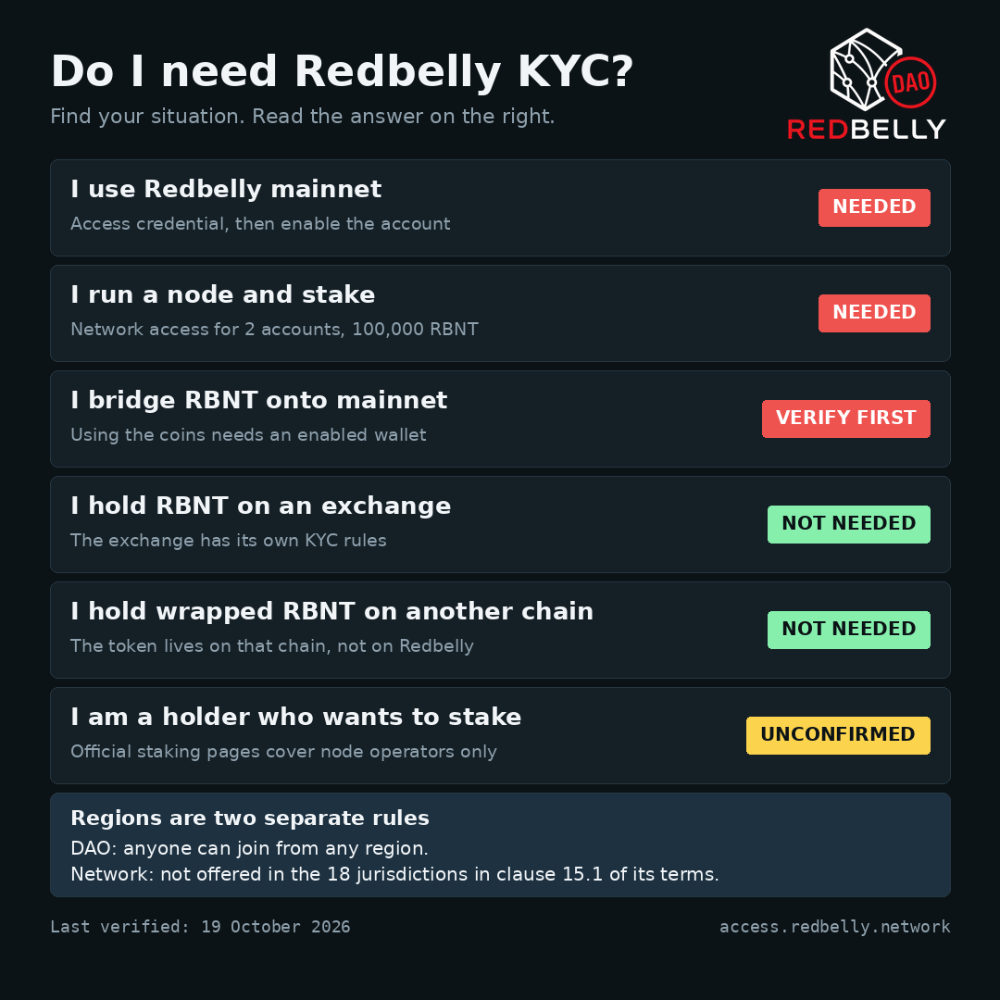

KYC and Wallet Activation Explainer
Redbelly DAO community guide. Last verified 19 October 2026.

KYC and Wallet Activation Explainer
Last verified: 19 October 2026. Every fact has a source number in brackets. Sources are in SOURCES.md.
How to read the answers: - Needed: an official source says so. - Not needed: no official page says it in those words, but it follows directly from an official rule. The rule is named each time. - Unconfirmed: no official page settles it. The reason is given.
Two things people mix up
Native mainnet activity means using an account on Redbelly Network itself. This needs identity verification and an enabled account [S13].
Wrapped or bridged RBNT on another chain is a token on a different network. It is not an account on Redbelly Network.
The DAO and the network have different regional rules. - The DAO used to limit which regions could join. That limit has been removed. Anyone can join the DAO from any region [S9]. - Redbelly Network does not offer its services in the jurisdictions in clause 15.1 of its terms. That has not changed [S3].
Part A: Do I need KYC?
| Your situation | Redbelly KYC | Reason |
|---|---|---|
| I use Redbelly mainnet (send, swap, use apps) | Needed | Every user must claim an access credential before the account gets write access to the network [S13]. |
| I run a node and stake | Needed | Node operators must have network access for 2 accounts [S6]. Every node stakes 100,000 RBNT [S7]. |
| I bridge RBNT onto Redbelly mainnet | Needed before you can use the coins | Bridging in is how RBNT gets to Redbelly [S14]. Once there, moving or using it needs an enabled account [S13]. Whether a bridge can deliver to a wallet that is not yet enabled is unconfirmed, so verify first. |
| I hold RBNT on an exchange | Not needed | Redbelly's rule is about write access to accounts on Redbelly Network [S13]. Gate and MEXC are listed as places to get RBNT [S14]. The exchange has its own KYC. |
| I hold wrapped or bridged RBNT on another chain | Not needed | The token lives on that chain, not on Redbelly Network [S13][S14]. |
| I am an ordinary holder who wants to stake | Unconfirmed | The official staking pages describe node operators [S7]. Delegated staking is on the roadmap [S8]. No page states a rule for ordinary holders. |
The same table is in img/decision-guide.png.
Part B: The five common questions
1. When is KYC required, and when is it not?
One line: KYC is required to use Redbelly mainnet, and not to hold RBNT on an exchange or on another chain.
Before an account can write to the network, its owner claims an access credential from an accredited issuer and then enables the account [S13]. The issuer for the official portal is Averer [S2]. The issuer covers the fees for network access [S2]. Holding RBNT outside Redbelly Network does not involve this process (see Part A).
2. How many wallets can one verified identity cover, and what happens beyond that?
One line: about 10 wallets per verified identity. Redbelly has not published the number on a page I could load.
After your first account is enabled, the Access portal offers to add more accounts connected to your identity [S2]. The figure of about 10 comes from the DAO task brief, which says it was verified with Averer [S9]. I could not load an Averer or Redbelly page that prints it, so check it on the live portal. What happens beyond the limit is not published. Ask Averer (Part D).
3. How long does approval usually take?
One line: no fixed time is published. Plan for minutes to days.
Redbelly said in January 2025 that Averer had over 1.1 million sign up requests in two weeks and that over 20 thousand tickets were logged for incomplete documents, which are checked by hand [S5]. That was a peak and is not a current promise. The one thing you control is sending complete, readable documents the first time.
4. Can I join from my country?
One line: you can join the DAO from any region. Redbelly Network is not offered in 18 listed jurisdictions.
- The DAO: the regional restriction has been removed, so anyone can join the DAO from any region [S9].
- The network: Redbelly does not offer its services in Afghanistan, Central African Republic, Democratic People's Republic of Korea, Democratic Republic of the Congo, Guinea-Bissau, Iran, Iraq, Lebanon, Libya, Myanmar, Russia, Somalia, South Sudan, Sudan, Syria, Ukraine, Yemen and Zimbabwe [S3]. Tax residents of, or people located in, those places may not use the website, platform or tools [S3].
Joining the DAO does not give you network access from a listed jurisdiction.
5. Is KYC needed to stake, and why?
One line: needed for node operators. Unconfirmed for ordinary holders.
A node operator must have network access for 2 accounts [S6] and stake 100,000 RBNT, which can be slashed if the node acts maliciously [S7]. Staking is done by a transaction on Redbelly mainnet [S7], and only enabled accounts can write to the network [S13]. For ordinary holders no official page states a rule [S7][S8].
Part C: Getting verified and activating a wallet
Before you start - A wallet. The portal lists MetaMask and Coinbase Wallet [S2]. - A valid passport. The issuer checks a photo identity document with biometric checks [S13]. - Check that you are not a tax resident of, or located in, one of the 18 jurisdictions in Part B, question 4 [S3]. - No fee for access. The issuer covers it [S2].
Steps 1. Open https://access.redbelly.network/ [S1]. This is the official portal [S13]. Check the address before you connect anything. 2. Press Connect wallet and approve the connection in your wallet [S1]. 3. Follow the prompts to start identity verification. Averer checks that you are who you say you are [S2]. Submit your passport and complete the biometric check [S13]. 4. Wait for approval. When Averer approves you, your account receives the Redbelly Network Access Credential [S2]. 5. Enable your account. This is a transaction your wallet signs, and it gives the account write access [S13]. Community reports say it needs a small RBNT balance for gas and that a wallet can show "Account status: Not enabled" until it is done [S10]. That detail is community reported and unconfirmed. 6. Done: the account can now send transactions on Redbelly mainnet [S13].
If your wallet does not show the network, add it by hand with these details [S15]:
| Field | Value |
|---|---|
| Network name | Redbelly Network Mainnet |
| RPC URL | https://governors.mainnet.redbelly.network |
| Chain ID | 151 |
| Currency symbol | RBNT |
| Block explorer | https://redbelly.routescan.io/ |
The portal also offers a Testnet account once your first account is enabled [S2]. Testnet is chain ID 153 and is separate from mainnet [S15].
Add another wallet to your verified identity 1. Open https://access.redbelly.network/ with a wallet that is already enabled [S1]. 2. Use the option to add more accounts connected to your identity [S2]. You do not verify again [S2]. 3. Each new wallet must be enabled before it can send transactions [S13]. Community reports say each network needs its own enabling [S10], which is unconfirmed.
Button names change over time, so follow the labels on the live portal. Never type your seed phrase or private key anywhere. Redbelly states that it will never intentionally gain access to or store private wallet keys [S3].
Privacy. Only claims made by official pages are made here. Averer's documentation says its design uses zero knowledge proofs so that proof is shown without revealing the credential itself [S11].
Part D: When something goes wrong
The portal sends identity verification problems to Averer [S2].
Approval is taking too long 1. Check that every document was complete and readable. Incomplete documents are checked by hand [S5]. 2. Wait. No time limit is published (Part B, question 3). 3. If it is still pending, open a ticket with Averer (below).
Verification is rejected Open an Averer ticket and ask for the reason [S2][S17]. Rejection reasons and an appeal route are not published. Do not resubmit the same documents again and again.
The wallet limit is reached The limit is about 10 wallets (Part B, question 2). The portal's own rules decide what happens after that, and no page describes a way past it. Ask Averer what applies to your identity [S17].
The wallet will not connect or will not enable Add the network by hand (Part C) and check that you are on mainnet and not testnet [S15]. For help building on the network, Redbelly's support page points to the official Discord [S16].
How to open an Averer support ticket 1. Go to https://averer-help.freshdesk.com/support/tickets/new [S17]. 2. Fill in: Full Name, Email Address, Subject, a description of the issue, and your Redbelly Wallet Address. The wallet address is marked required [S17]. 3. Attach a file if it helps, then press Submit [S17]. 4. Give the wallet address you used in Redbelly Access and say what the screen shows.
Never put a seed phrase or private key in a ticket. The form only asks for your wallet address [S17].
Sources
Last verified: 19 October 2026. Official means published by Redbelly Network, Averer or the Redbelly DAO. Community means written by a third party and unconfirmed.
| ID | Status | What it supports | Link |
|---|---|---|---|
| S1 | Official | Official Access portal address, Connect wallet | https://access.redbelly.network/ |
| S2 | Official | Portal FAQ: identity verification is core, Averer is the accredited issuer, issuer covers fees, MetaMask and Coinbase Wallet, add more accounts to your identity, Testnet account offered, identity problems go to Averer | https://access.redbelly.network/ |
| S3 | Official | Terms: clause 15.1 jurisdiction list, clause 15.2 tax residents and location, clause 1.3 private keys | https://redbelly.network/terms-and-conditions |
| S4 | Official | Individual onboarding covers wallet authentication, KYC verification and on-chain permission setup | https://docs.redbelly.network/pages/eligibility-sdk/onboarding/individual/overview/ |
| S5 | Official | Redbelly post, 3 January 2025: over 1.1 million sign ups in two weeks, over 20 thousand tickets for incomplete documents | https://x.com/RedbellyNetwork/status/1875013929019314508 |
| S6 | Official | Node operators must have network access for 2 accounts | https://vine.redbelly.network/nodes/operator-guide/ |
| S7 | Official | Every node stakes 100,000 RBNT, stake can be slashed, deposit on the mainnet staking contract | https://vine.redbelly.network/nds-staking |
| S8 | Official | Roadmap lists delegated staking | https://redbelly.network/ |
| S9 | Official | DAO regional restriction removed, about 10 wallets per identity as verified with Averer. Both stated in the DAO TASK-18 brief. Add the governance vote link when you find it. | TASK-18 brief on https://taskboard.redbellydao.network/ and https://redbelly-governance.vercel.app/ |
| S10 | Community, unconfirmed | Enabling needs a funded account, shows "Not enabled" until done, per network | https://dev.to/rahmandefi/redbelly-network-troubleshooting-fixes-for-the-21-most-common-developer-errors-17i |
| S11 | Official | Averer documentation, zero knowledge proofs | https://docs.averer.co/ |
| S12 | Official | Brand kit and voice rules | https://taskboard.redbellydao.network/brand |
| S13 | Official | User access: credential from an accredited issuer, passport with biometric checks, then self enable write access, official access dApp | https://vine.redbelly.network/identity/user-access/ |
| S14 | Official | Native currency: Gate and MEXC listed, bridge non Redbelly RBNT with Lucid Labs | https://vine.redbelly.network/native-currency/ |
| S15 | Official | Mainnet and testnet network details, chain IDs 151 and 153 | https://vine.redbelly.network/environments/ |
| S16 | Official | Support page: Discord for builders, Node Operator Support Portal for node operators | https://vine.redbelly.network/support/ |
| S17 | Official | Averer ticket form fields, wallet address required | https://averer-help.freshdesk.com/support/tickets/new |
Not confirmed by any page I could load
- A page that prints the wallet limit. The number comes from the TASK-18 brief.
- The portal's own on screen messages for approval time and the wallet limit. The portal is an app and its text does not load as a normal page. Check them on the live portal and add them here.
- The Snapshot or governance link for the DAO region vote.
- A published approval time.
- Any rule for ordinary holder staking.